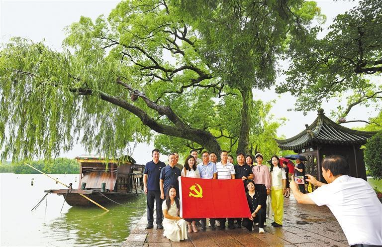
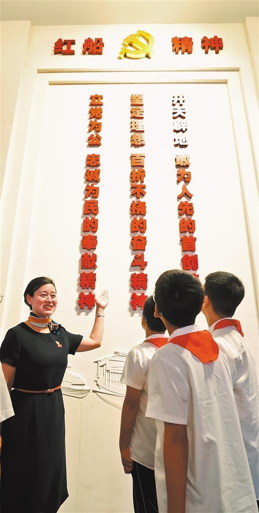
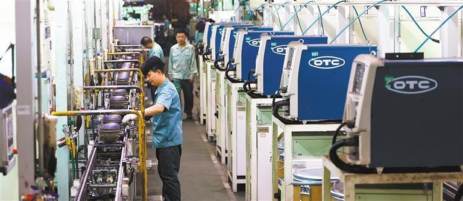
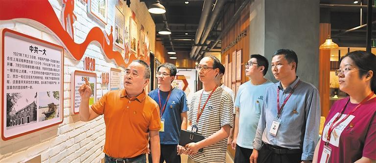
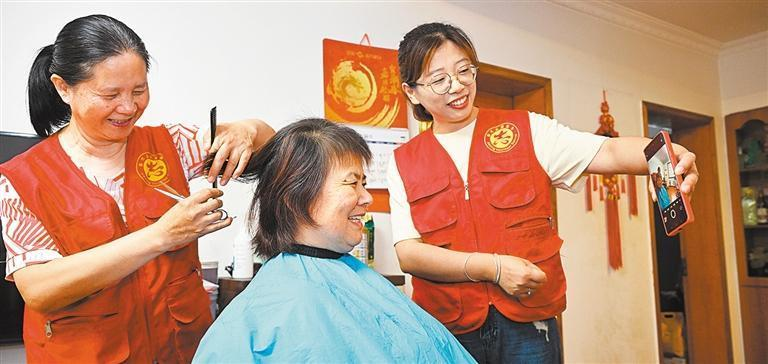
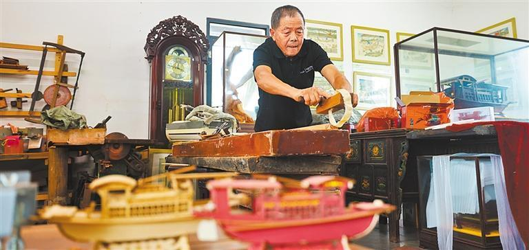

党员群众在“七一”前夕来到浙江省嘉兴市南湖景区湖心岛瞻仰红船，感悟初心使命，弘扬“红船精神”。

南湖革命纪念馆讲解员袁晶给观众讲解“红船精神”

嘉兴市加西贝拉压缩机有限公司总装车间，员工在生产线上忙碌。该企业年产销压缩机4500多万台，综合竞争力位居全球行业前列。

嘉兴经济技术开发区塘汇街道正原党群服务中心，企业党员学习党史知识，重温党的光辉历程。

嘉兴经济技术开发区长水街道府南社区，志愿者为老人上门服务。社区在“红船精神”指引下，积极创建“法治＋自治＋德治+智治”融合发展的新型未来社区。
嘉兴市秀洲区油车港镇胜丰村菱珑湾景区村庄船匠技艺馆，72岁的造船技艺非遗传承人张来生在制作红船船模。

游客在嘉兴市南湖区余新镇长秦村“渔里问道”露营地感受和美乡村。“渔里问道”和美乡村通过搭建“政府+企业+村集体+农户”共富矩阵，促进村集体经济增收，带动农民致富。
“上海党的一大会址、嘉兴南湖红船是我们党梦想起航的地方。我们党从这里诞生，从这里出征，从这里走向全国执政。这里是我们党的根脉。”2017年10月31日，在党的十九大胜利闭幕一周之际，习近平总书记带领中共中央政治局常委专程瞻仰上海中共一大会址和嘉兴南湖红船，并深刻指出，我们要结合时代特点大力弘扬“红船精神”，让“红船精神”永放光芒。
小小红船承载千钧，播下了中国革命的火种，开启了中国共产党的跨世纪航程。2005年6月，习近平刊发文章对“红船精神”作出概括：“开天辟地、敢为人先的首创精神，坚定理想、百折不挠的奋斗精神，立党为公、忠诚为民的奉献精神。”
谆谆教诲犹在耳畔，浙江嘉兴始终牢记嘱托，不断从“红船精神”中汲取力量。如今，嘉兴坚持抓党建促乡村振兴，持续深化“千万工程”，全力推动高质量发展，建设共同富裕典范城市。
目前，嘉兴全域已列入国家共同富裕实践观察地，5项工作入选浙江省共同富裕最佳实践，农村居民收入连续20年保持全省首位，零就业家庭实现动态清零，城乡居民养老保险保障水平列全省第一。嘉兴不断加快推进和美乡村建设，建成和美乡村示范片区7个、省级未来乡村24个，101路红色旅游公交入选全国乡村旅游精品线路。
嘉兴是红船起航地，也是统筹城乡发展的先行地。未来，嘉兴将持续打造全域和美乡村，推动新型城镇化和乡村全面振兴有机结合，加快美丽城镇集群化建设，推进风貌特色镇示范建设，彰显全域秀美风貌，推动农文旅融合发展，促进美丽乡村向美丽经济转化。
文/经济日报记者 李景 | 图/经济日报记者 高兴贵